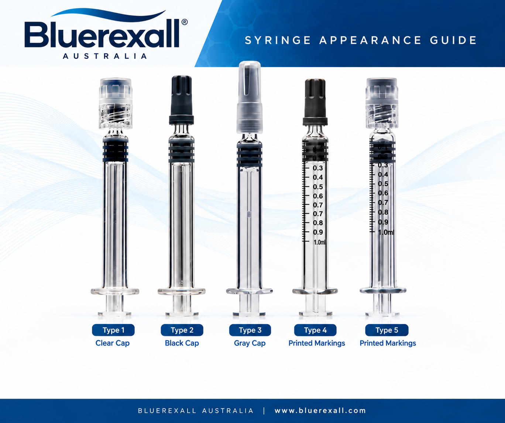
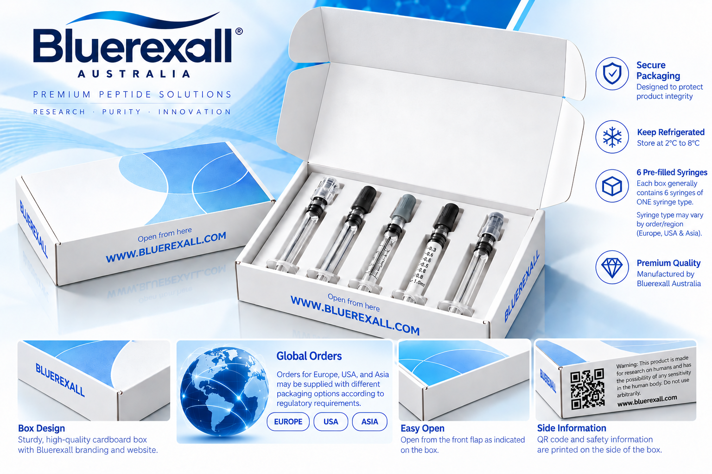

Cap Appearance
Cap color, shape, or style may differ between products, production series, packaging versions, or destination markets. A clear, black, or gray cap alone does not determine authenticity.
A visual reference for Bluerexall syringe appearance, packaging variations, regional packaging information, and official product code verification.
This guide illustrates syringe styles associated with Bluerexall product packaging. The examples demonstrate possible differences in cap appearance, syringe design, and printed markings.
The different syringe styles displayed below are visual references. They do not mean that all of these syringe types are supplied together in a single box.

Cap color, shape, or style may differ between products, production series, packaging versions, or destination markets. A clear, black, or gray cap alone does not determine authenticity.
The presence, layout, or appearance of printed markings may vary. The illustrations on this page should not be used to infer dosing, capacity, or technical specifications.
Visual details may change between packaging series and destination markets. Always compare the information supplied with your specific product and use the official verification system when required.
Bluerexall products are generally supplied in boxes containing 6 pre-filled syringes of the same syringe type.
A single box does not normally contain a mixture of the different syringe styles displayed in the visual guide. The multiple syringe designs shown in our reference artwork are intended to demonstrate possible syringe variations.
Syringe appearance, cap style, printed markings, box presentation, and packaging configuration may vary according to the product, production series, destination, and order requirements.

Bluerexall boxes generally contain six pre-filled syringes. Always refer to the information supplied with the specific product for its exact package contents.
Different syringe designs shown in the reference images demonstrate possible variations. A box generally contains one syringe type rather than a mixture of the different illustrated styles.
Packaging and syringe appearance may differ for orders supplied to Europe, the USA, Asia, or other markets according to the applicable order and packaging requirements.
For authenticity checks, open the Bluerexall Serial Codes Validator from this website and enter the verification code exactly as printed on your packaging.
Product verification should be based on the official verification result rather than syringe or packaging appearance alone.
Verify Product Code Contact Bluerexall with packaging questions